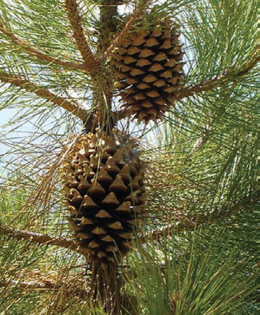
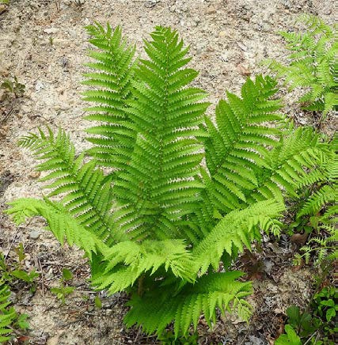

Activity 9
Use library or online sources to explore the main groups of plants.
Living things depend on each other in many ways. Plants and animals depend on each other for food, shelter and air. Plants depend on animals to disperse their seeds from one place to another. Animals depend on plants for food and shelter. Also, plants use carbon dioxide produced by animals during gaseous exchange to make their own food. When making their food, plants produce oxygen. Oxygen produced by plants is used by animals for gaseous exchange.
Living things are valued by taking care of them and providing them with their needs. These needs include air, food, light and water. Caring for living things will